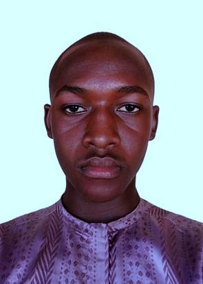

Digital Evidence
Studying the identification, preservation, acquisition, examination, and interpretation of digital evidence.
Learn moreDigital Forensics Student
Digital Forensics student focused on digital investigation, forensic analysis, digital evidence, technical research, and practical laboratory work.
I am a Digital Forensics student developing practical skills in the identification, preservation, examination, and analysis of digital evidence. This portfolio documen[...]

Preserve. Examine.
Understand.
About
My focus is Digital Forensics and the practical examination of digital evidence. Through laboratory exercises, research, technical projects, and simulated investigations, I am developin[...]
Focus Areas
Studying the identification, preservation, acquisition, examination, and interpretation of digital evidence.
Learn moreDeveloping practical skills in examining digital artifacts, file systems, memory, timelines, and other forensic evidence sources.
Learn moreApplying structured and documented approaches to forensic examination, analysis, validation, and reporting.
Learn moreNext step
View my forensic laboratory exercises, projects, research, and case studies.
Visit the Forensics Lab